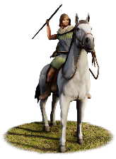
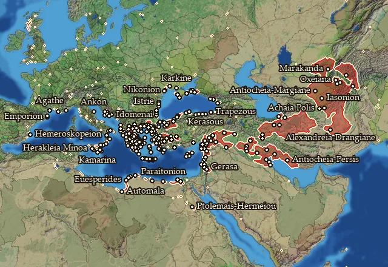

RTR: Imperium Surrectum
RTR: Imperium SurrectumProdromoi


Class: missile · Category: cavalry · Men per unit: 30
Description
The Prodromoi or ‘scouts’ were a generic type of cavalry, commonly found throughout the Greek world who, armed as mounted javelin men, took on the roles of scouts and couriers in the armies of the Greek city-states.
Who can recruit it
A core roster unit for 45 factions, each able to raise it anywhere they hold the right building:
Acarnanian League · Achaean League · Acragas · Antigonid Kingdom · Argos · Athens · Bactria · Boeotians · Byzantium · Chersonesus · Chios · Chrysaorian League · Cius · Cyrene · Cyzicus · Elis · Emporion · Epirus · Gortyn · Heraclea Pontica · Histria · Issa · Knossos · Kydonia · Lycian League · Lysiad Kingdom · Lyttos · Massalia · Megalopolis · Messene · Miletus · Olbia · Pergamon · Pontic Pentapolis · Priene · Rhodes · Seleucid Empire · Seleucid Rebels (Asia Minor) · Seleucid Rebels (Upper Satrapies) · Selge
…and 5 more.
Any faction holding one of the provinces below can field it.
Exactly what a settlement must have, route by route (10)
Areas of recruitment

| Zone | Provinces | ||||||
|---|---|---|---|---|---|---|---|
| Greek | 263 |
Stats
| Rank in roster | Rank in roster | Rank in roster | Rank in roster | ||||||||
|---|---|---|---|---|---|---|---|---|---|---|---|
| Men per unit | 30 | █········· 8% | Attack | 9 | █········· 14% | Charge bonus | 15 | ██████···· 64% | Defence | 14 | █········· 6% |
| · armour | 2 | █········· 13% | · defence skill | 12 | █········· 10% | · shield | 0 | █········· 0% | Morale | 8 | ██········ 19% |
| Discipline | Normal | Training | Untrained | Recruitment cost | 1,343 dn | █········· 11% | Upkeep per turn | 541 dn | ███······· 25% | ||
| Turns to recruit | 2 |
Weapons
| Primary | Secondary | Primary | Secondary | Primary | Secondary | Primary | Secondary | ||||
|---|---|---|---|---|---|---|---|---|---|---|---|
| Attack | 9 | 7 | Charge bonus | 15 | 19 | Type | thrown · archery | melee · blade | Damage | piercing | piercing |
| Projectile | javelin | — | Range | 60 | — | Ammunition | 7 | — | Properties | Thrown | — |
Defence
| Primary | Secondary | Primary | Secondary | Primary | Secondary | Primary | Secondary | ||||
|---|---|---|---|---|---|---|---|---|---|---|---|
| Total | 14 | — | Armour | 2 | — | Defence skill | 12 | — | Shield | 0 | — |
Condition and terrain
| Hit points | 1 | Mount | light horse | Ground: scrub / sand / forest / snow | 0 / 0 / -4 / 0 | Charge distance | 40 |
| Formations | Square |
Technical stats
| Time between blows (primary / secondary) | 2.5 s / 2.5 s | Extra fatigue in hot climates | 0 | Spacing between men: close / loose | 2.2 × 5.2 m / 3.96 × 7.28 m | Default ranks | 5 |
In battle: Can form Cantabrian circle · Very good stamina